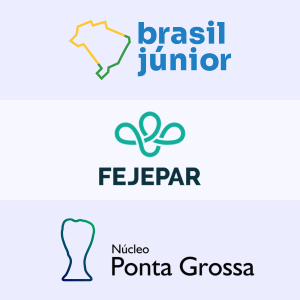

História do MEJ
O Movimento Empresa Júnior (MEJ) teve início em 1967 na França, com a fundação da primeira empresa júnior, ligada à École Supérieure des Sciences Economiques et Commerciales (ESSEC). A partir de 1988, o MEJ chega ao Brasil, com a fundação das primeiras empresas juniores nacionais.
Empresas juniores (EJs) são associações sem fins lucrativos, compostas por alunos de graduação vinculados a uma instituição de ensino superior (IES). O objetivo das empresas juniores é contribuir para o desenvolvimento acadêmico e profissional de seus membros, através da prestação de serviços. Os membros de uma empresa júnior contam com a orientação e supervisão de professores e outros profissionais qualificados, vinculados à respectiva IES.
Segundo dados da Confederação Brasileira de Empresas Juniores (Brasil Júnior), em 2022, o Brasil possuía mais de 1500 empresas juniores, ligadas a mais de 300 instituições de ensino superior.
Instâncias do MEJ
No Brasil, as empresas juniores compõem uma rede com várias instâncias:
- Em nível nacional, temos a Confederação Brasileira de Empresas Juniores ― Brasil Júnior.
- Em nível estadual, temos as federações de empresas juniores de cada estado. No Paraná, somos representados pela Federação das Empresas Juniores do Estado do Paraná ― FEJEPAR.
- Em nível regional, temos núcleos de empresas juniores para diferentes regiões de um estado. A Protut faz parte do Núcleo Ponta Grossa de Empresas Juniores ― NucPG.
Por que contratar uma empresa júnior?
Ao contratar uma empresa júnior, você contribui para o desenvolvimento profissional dos estudantes da sua região e obtém diversos benefícios, como:
- Soluções personalizadas, desenvolvidas especificamente para atender às suas necessidades.
- Produtos e serviços mais acessíveis, uma vez que empresas juniores não têm fins lucrativos.
- Seus problemas serão resolvidos por pessoas em contato com o que há de mais recente em termos de inovação e tecnologia.
- Alta qualidade nos serviços prestados, assegurada por pessoal extremamente qualificado e em constante atualização, e pela orientação de uma instituição de ensino superior.
A Protut oferece soluções nas áreas de Engenharia Elétrica e Automação. Para saber mais, consulte nossos serviços.